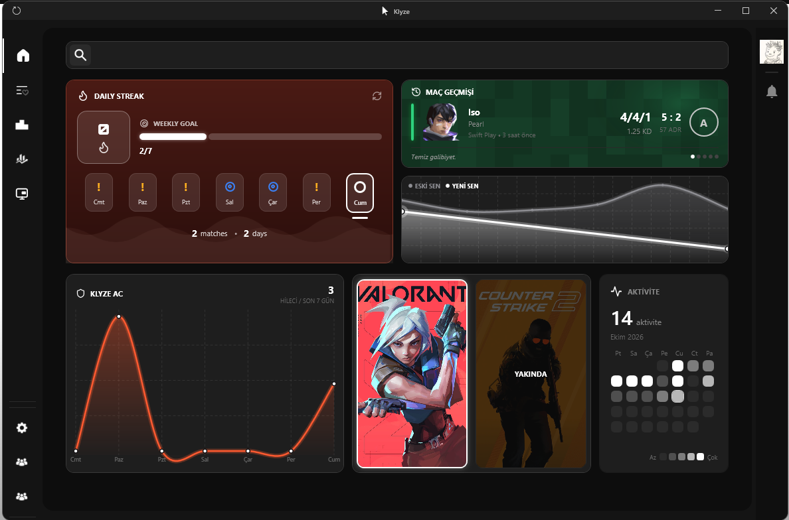
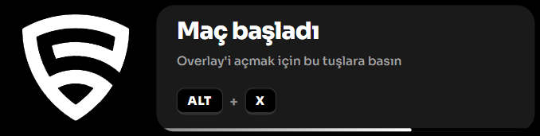

Maç analizi
Son 20 maçın Elo grafiği, K/D, ADR ve HS%'siyle önünde. Hangi haritada, hangi ajanla düştüğünü net gör.
Rank takibi, maç analizi ve canlı overlay tek uygulamada. Riot ID'ni bağla, son 20 maçın önüne gelsin.
Windows için İndir
Son 20 maçın Elo grafiği, K/D, ADR ve HS%'siyle önünde. Hangi haritada, hangi ajanla düştüğünü net gör.

Oyun üstünde şeffaf panel: takım/rakip kadrosu, kazanma şansı ve AC etiketleri. Tıklamaya kapalı, oyunu engellemez.
Her gün oyna, zinciri uzat. Haftalık hedefini ve oynadığın günleri tek panelde takip et.
Kadrodaki oyuncuları tarar, hileciyi ve smurf'ü işaretler. Son 7 günün raporu tek panelde.
Özellikler
Uygulamayı açtığında ilk göreceğin ana sayfa bu. Yanındaki notlara bak — her alanın işi farklı.
KLYZE ANA SAYFA
İçeride ne var?
Ana sayfa turunda gördüğün panellerin arkasında ne var? Klyze’nin maçtan maça kullandığın altı parçası ve güvenlik notları.
Son 20 maçın Elo grafiği, altı metrik ve maç detayı tek ekranda.
Takım ve rakip kadrosu, kazanma şansı ve AC etiketleri oyunun üstünde.
Kadrodaki her oyuncuyu kurallar, makine öğrenmesi ve AI ile tarar.
Valorant koçun: taktik, ajan, ekonomi ve strateji sorularını yanıtlar.
Her gün oyna, seriyi büyüt; hedefini ve aktiviteni takip et.
Topluluk akışında paylaş; rank ve performansını profilde tut.
Güvende kal
Klyze oyun dosyalarına yazmaz veya oyuna enjekte etmez. Overlay tıklamaları oyuna geçer; maç verisi okunur.
CANLI MAÇSEZON 1
Klyze'e bağlanan oyuncular ELO sırasına göre burada. Ara, rankına göre filtrele ve zirveye kimin oturduğunu gör.
Zirve
Sıralama yükleniyor…
Tüm oyuncular
Sıralama yükleniyor…
ELO = rank kademesi × 100 + RR
Farklı bir Riot ID veya rank filtresi dene.
Bağlantını kontrol edip tekrar dene. Sorun sürerse biraz sonra yeniden bakabilirsin.
Sıralama
Riot ID'ni bağla, maçlarını analiz et ve sıralamadaki yerini gör.
Klyze topluluğu
Oyuncuların Klyze deneyimine dair notları.
Topluluk
12 yorum
Tüm yorumlar gösterildi.
Sen de anlat
Klyze'yi kullandıysan birkaç cümle bırak; diğer oyunculara yol göster.
Klyze · Windows
Rank takibi, maç analizi ve canlı overlay tek uygulamada. İndir, Riot ID'ni bağla, ilk maçını analiz et.
Yardım merkezi
Önce aradığın cevabı bul. Bulamazsan talep oluştur; konuyu net anlat, birlikte çözelim.
Örnek: “overlay görünmüyor”, “kurulum”, “rank güncellenmiyor”
Sık sorulanlar
11 soru
Aradığın cevabı bulamadık
Soru farklı yazılmış olabilir. Aşağıdan talep oluştur ya da Discord'da sor.
Cevabını bulamadın mı?
Kategoriyi seç, konuyu ve ne olduğunu yaz. Talebin için bir numara üretilir; metni Discord'daki destek kanalına gönderirsin.
Acil değilse Discord topluluğuna da bakabilirsin.
Talep hazır
KLY-000000
Metni kopyalayıp Discord'daki #destek kanalına yapıştır. Ekran görüntüsünü de aynı mesaja ekleyebilirsin.
Bu tarayıcı
Henüz talep oluşturmadın.
Windows
Klyze şu an Windows'ta çalışıyor. İndir, Riot ID'ni bağla; ilk kurulum yaklaşık iki dakika sürer.
Önerilen
Windows dışındaki sistemlerde çalışmaz. İndirme dosyası yaklaşık 121,6 MB.
Diğer platformlar
Adım adım
Kurulum dosyasını bu sayfadaki “Windows için indir” düğmesiyle indir. Dosya yaklaşık 121,6 MB.
Windows “bilinmeyen yayımcı” uyarısı gösterirse Daha fazla bilgi → Yine de çalıştır ile devam et.
Uygulamayı aç, Riot ID ve tag bilgini gir. Şifre gerekmez.
Oyun içinde ALT + X tuşlarına bas. Overlay açılır, aynı kısayolla kapanır.
Gereksinimler
Takıldın mı?
Önce sık sorulanlara bak. Cevap yoksa talep oluştur; hangi adımda takıldığını ve ekranda ne yazdığını yaz.
Lobideki oyuncuları maç başlamadan tarar; hileciyi ve smurf'ü işaretler. Detaylar Klyze AC'nin kendi sitesinde.
Site henüz yayında değil. Açıldığında buradan gidebilirsin.